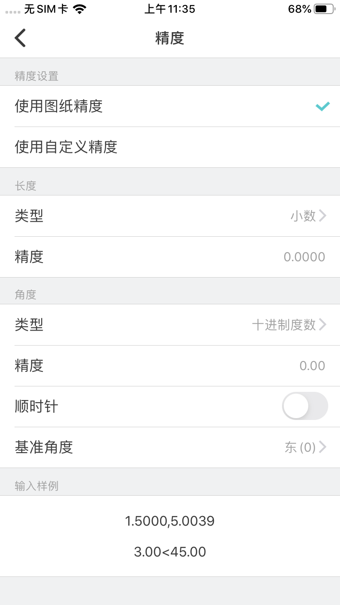

功能入口：
设置 > 精度
测量命令 > 精度
精度设置：
默认使用图纸精度；切换到使用自定义精度时，将忽略图纸精度，将自定义的精度应用到测量和绘制的长度和角度值中。
长度：
长度类型支持小数，分数，工程，建筑，科学。
长度精度支持到小数位后8位。
角度：
角度类型支持十进制度数，百分度，度/分/秒，弧度，勘测单位。
角度精度支持到小数位后8位。
默认的正角度方向是逆时针方向。可点击开关切换为顺时针方向。
基准角度提供东，北，西，南四个选项，也可自定义。
说明：
1.输入角度值时，仅提供以十进制度数的方式输入，其它角度类型暂不支持；
2.新建图纸默认精度为4位。